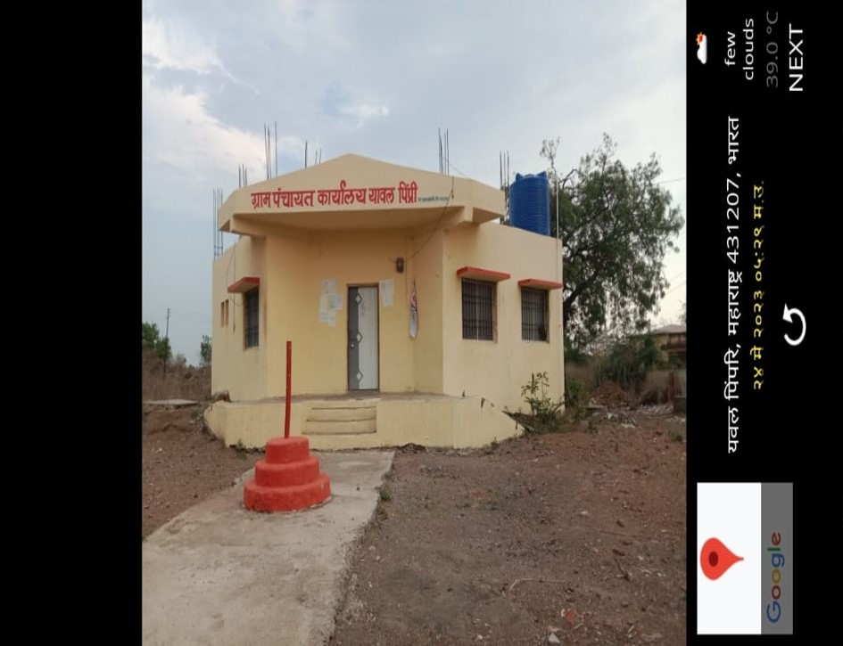
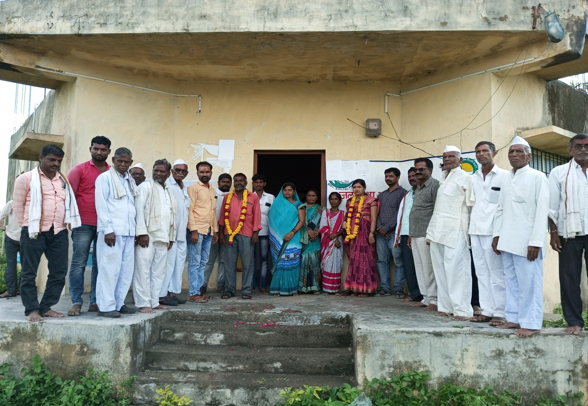
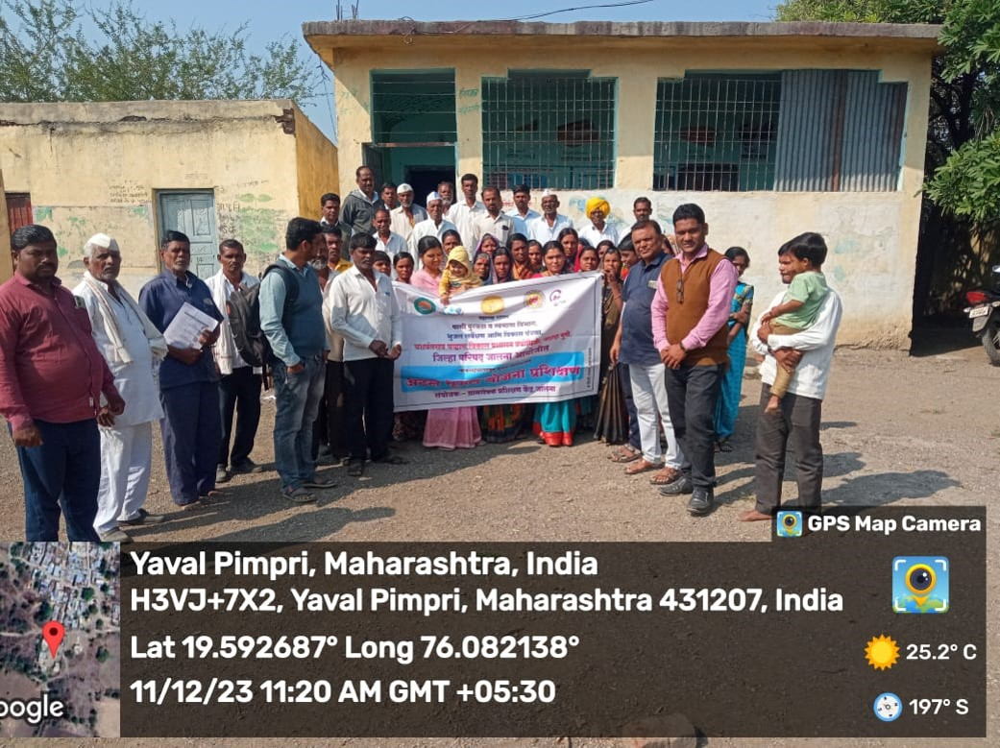
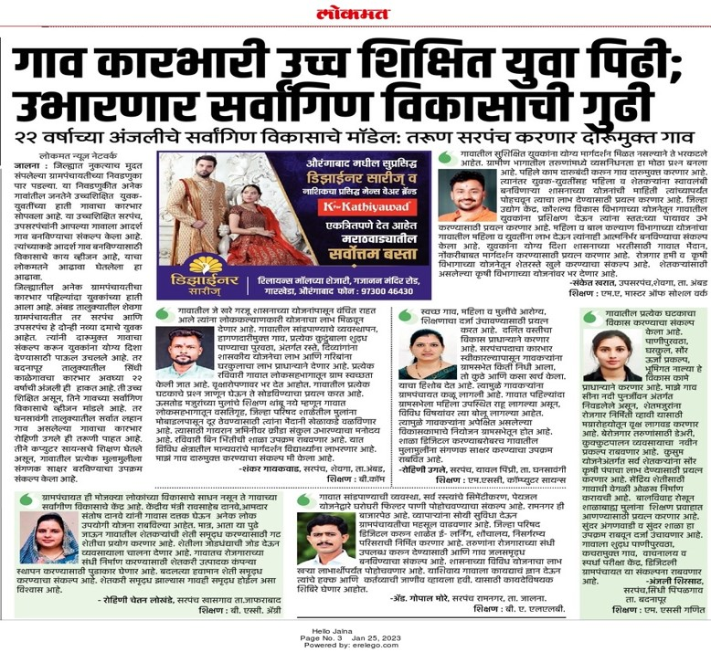

ग्रामपंचायत कार्यालय
ग्रामपंचायत निवडणूक
मुलाखत
अटल भूजल योजना जन जागृती
प्रसार माध्यमाने घेतलेली दखल
ग्रामपंचायत कार्यालय यावल पिंपरी
ता. घनसावंगी, जि. जालना, पिनकोड : ४३१५०४
ग्रामपंचायत स्थापना वर्ष : १९९५
लोकसंख्या : ६०१ (२०११ )
पुरुष :
महिला :
दलित :
इतर मागास प्रवर्ग :
ग्रामपंचायत सदस्य संख्या : ०७
ग्रामपंचायतमार्फत अधिकृत जन्म प्रमाणपत्र देणे.
मृत्यूची नोंदणी व प्रमाणपत्राची पूर्तता.
स्थायिक रहिवाशी असल्याचा दाखला देणे.
ग्रामपंचायतस्तरावर विवाह नोंदणी सेवा.
घरपट्टी भरणा, कर नोंदणी व रेकॉर्ड.
पाणी पुरवठा व टाकी तपासणी सेवा.
| अ .क्र . | नाव | पद | शिक्षण | प्रवर्ग |
|---|---|---|---|---|
| १ | श्री . दादाराव आनंदा कांबळे | उपसरपंच | ४ थी | अनुसूचित जाती |
| २ | सौ . शीला कैलाश कांबळे | सदस्या | १२ वी | अनुसूचित जाती |
| ३ | सौ . राजामती गणेश उगले | सदस्या | १२ वी | सर्व साधारण महिला |
| ४ | सौ .शिवनंदा आसाराम चिमणकर | सदस्या | ७ वी | ना .मा .प्र .महिला |
| ५ | श्री . बालाजी दत्तू चिमणकर | सदस्य | ७ वी | ना .मा .प्र .सर्व साधारण |
| ६ | श्री . ज्ञानेश्वर निवृत्ती उगले | सदस्य | ७ वी | सर्व साधारण |
| अ .क्र . | नाव | पद |
|---|---|---|
| १ | श्री . एस .जे .चांदणे | ग्रामसेवक |
| २ | श्री . तूपसौंदर | तलाठी |
| ३ | सौ . कविता साहेबराव उगले | रोजगार सेवक |
| ४ | सौ . शिवनंदा आसाराम चिमणकर | अशा सेविका |
| ५ | सौ . गंगुबाई संदीपान उगले | अंगणवाडी सेविका |
| ६ | सौ . सरस्वती बाबुराव जाधव | अंगणवाडी मदतनीस |
| ७ | श्री . आबासाहेब नामदेव उगले | ग्रामपंचायत शिपाई |
| ८ | श्री . आर .वाघ | कृषी सहायक |
| ९ | श्री . विजयराज राठोड | संगणक परिचालक |
| अ .क्र . | नाव | पद |
|---|---|---|
| १ | माणिकराव शाहूराव उगले | वी .से .सह . सदस्य |
| २ | ज्ञानदेव मारोती कांबळे | वी .से .सह . सदस्य |
| ३ | श्री . अरुण अण्णासाहेब उगले | तंटामुक्ती समिती अध्यक्ष |
| ४ | श्री . वैजिनाथ आसाराम उगले | शालेय समिती अध्यक्ष |